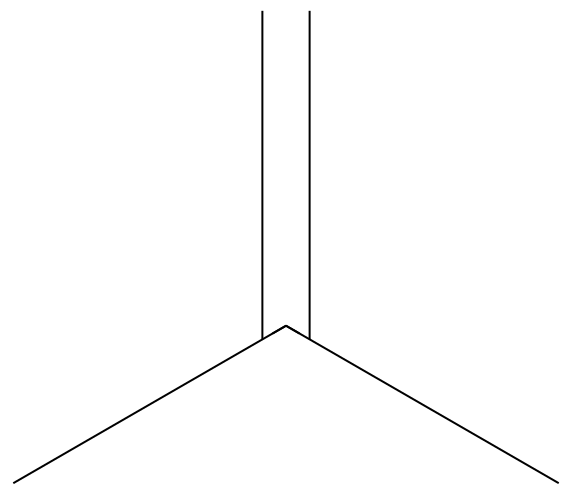

令和元年度 問5 有機化学及び燃料
次の記述の【 】に入る語句の組合せとして、最も適切なものはどれか。
2－メチルプロペン（イソブテン）に、酸触媒存在下で水を付加させると、ほぼ選択的に【 a 】が生成する。これは、中間体である【 b 】のうち、3級の【 b 】が1級の【 b 】よりも安定であるためである。ハロゲン化水素が二重結合に付加するときの付加の選択性に関する法則を【 c 】というが、水の付加の場合にもこの法則が適用できる。【 a 】とは水酸基の位置が異なる【 d 】を合成するには、【 e 】のあとに酸化するなどの方法を用いることが必要である。
| 選択肢 | a | b | c | d | e | |
|---|---|---|---|---|---|---|
|
①
|
2-メチル-1-プロパノール | カルボアニオン | Saytzeff則 | 2-メチル-2-プロパノール | オキシ水銀化 | |
|
②
|
2-メチル-1-プロパノール | カルボカチオン | Saytzeff則 | 2-メチル-2-プロパノール | オキシ水銀化 | |
|
③
|
2-メチル-1-プロパノール | カルボアニオン | Markovnikov則 | 2-メチル-2-プロパノール | ヒドロホウ素化 | |
|
④
|
2-メチル-2-プロパノール | カルボカチオン | Saytzeff則 | 2-メチル-1-プロパノール | オキシ水銀化 | |
|
⑤
|
2-メチル-2-プロパノール | カルボカチオン | Markovnikov則 | 2-メチル-1-プロパノール | ヒドロホウ素化 | |
イソブテンの二重結合に対する付加反応です。

まず酸触媒（H+）により、イソブテンにプロトンが付加することでカルボカチオンが生成します（b）。
カルボカチオンは水素置換数の少ない（級数の大きい）炭素原子ほど超共役効果によって安定化されます（マルコフニコフ則：c）。
マルコフニコフ則に従い、酸と反応したイソブテンはメチル基が3つ結合したカルボカチオンが生成します。C+の炭素に水が付加することで2-メチル-2-プロパノールが生成します（a）。
2-メチル-2-プロパノールと位置の異なる2-メチル-1-プロパノール（d）を合成するには、水素-ホウ素結合を有するボランを反応させます（ヒドロホウ素化：e）。二重結合にH-BH2の形で付加する遷移状態を経るため、立体的にメチル基とは反対側に付加します。また立体障害の少ない1級炭素側へアルコールの前駆体であるBH2が付加します。アンチマルコフニコフ付加とも呼ばれます。
ちなみにcの選択肢にあるザイツェフ則は分子内脱水が起きる際の生成物のできやすさを表す法則です。水素置換数の少ない（級数の大きい）炭素原子ほど脱水が起こりやすくなります（3級炭素＞2級＞1級）。